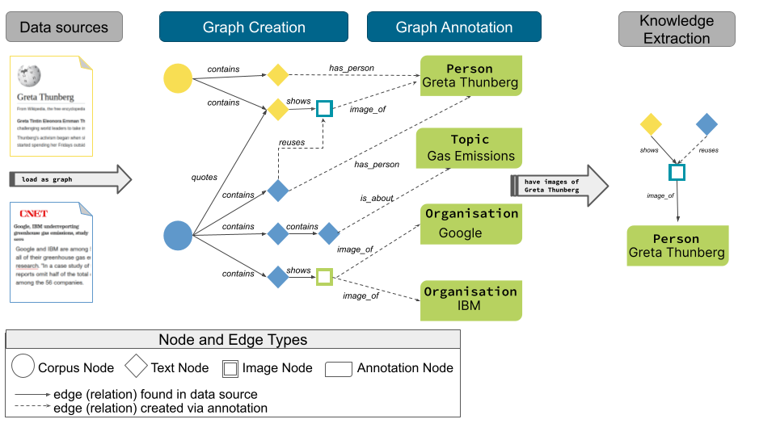
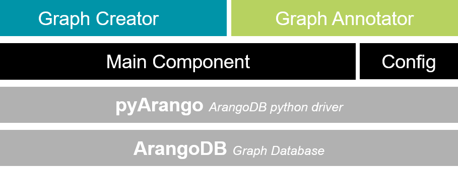

CAG Concept¶
Corpus Annotation Graph builder (CAG) is an architectural framework that employs the build-and-annotate pattern for creating a graph. CAG is built on top of ArangoDB and its Python drivers (PyArango). Please check our paper here.
The CAG architectural framework aims to offer researchers a flexible but unified way of organizing and maintaining their interlinked document collections in a reproducible way.
The build-and-annotate pattern consists of two phases, as shown in the Figure above: (1) data is collected from different sources (e.g., publication databases, online encyclopedias, news feeds, web portals, electronic libraries, repositories, media platforms) and preprocessed to build the core nodes, which we call Objects of Interest (OOI). The component responsible for this phase is the Graph-Creator. (2) Annotations are extracted from the OOIs, and corresponding annotation nodes are created and linked to the core nodes. The component dealing with this phase is the Graph-Annotator.
Graph-Creator (GC)¶
GC offers a unified layout, structuring the creation process of a graph from one or many datasources. GraphCreatorBase, CAG’s primary GC class, manages one datasource within a graph. It is an abstract class that inherits all the functionalities of the “Main Component”.
A graph creator should be designated for one corpus or datasource where the data is mapped to the graph elements (nodes and edges) by creating OOI nodes and corresponding relations (a.k.a edges).
Input: Raw corpus data
Output: A graph, in ArangoDB, where the nodes and edges contains raw corpus data.
You can learn about how to create one in the get started guide
Graph-Annotator¶
Annotator components enrich the graph by analyzing nodes and edge them to newly created annotation nodes. Annotations can be on different levels. For example, corpus level (e.g. corpus statistics, topics), text nodes (e.g. named entities, keyphrases), image nodes (e.g. generated caption), etc.
Input: Set of nodes/edges
Output: New annotation nodes and relations in ArangoDB.
You can learn about how to create one in the get started guide
Metadata stored in annotation nodes and annotated edges:
Timestamp
Component that created the annotation
Parameters used for analysing content nodes
The annotator is responsible for adding levels of abstractions to create a edgeable graph. More precisely, this component is responsible for taking a set of nodes (e.g., TextNodes) and applying a pipeline (e.g., text mining pipeline) to extract features on the level of a single node or a collection. These extracted features are then saved in an annotation node or directly on the annotated node.
As a start, we support the creation of a text-mining pipeline that the user can customize. The package contains some samples of features extractions cag.framework.annotator.textmining_pipes. Alternatively, we provide some functionality in a low-level extensible class, similar to the graph creator. You can read about how to use it in the annotator guide
Gradual update rules:
The annotation metadata is used to keep the annoation graph consistent and to avoid unneccessary computations.
An annotation of a OOS node is only computed once. To this end, before an annotator (parameterized by algorithm and settings) analyzes an OOS node, it first checks if there exists already an attached annotation node that has matching parameter settings in its metadata. In this way annotations can be created on demand for specific subgraphs depending on the analysis goal and re-used where possible. The more analysis runs performed, the less likely it is that a OOS node has to be evaluated.
However, since the corpus builder can modify the OOS part of the graph annotations may need to be updated after graph updates. The timestamp propagation mechanism of the graph builder components described above ensures that the timestamp of OOS nodes is updated if it was affected by a graph update. If the timestamp of an annotation is smaller than the timestamp of its attached OOS node, it might be outdated and needs re-computation.
Two options for annotation updates (open issue):
Compute new delete old (Pro: No legacy information, Con: Graph is not fully reversible to a prior state).
Compute new flag old as outdated (Pro: Graph is fully reversible to any prior state, Con: Graph may contain much useless information, e.g. results from trial runs)